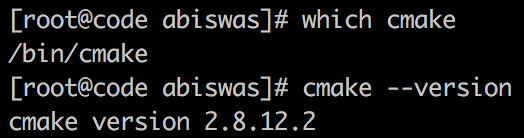
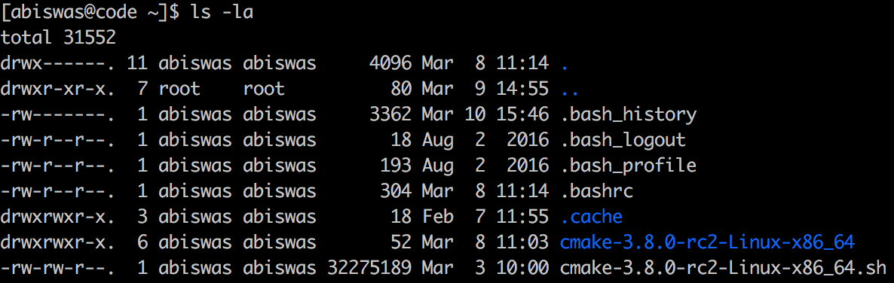
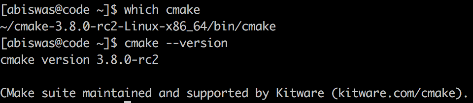

Before you start, make sure you know how to SSH to the server. Learn about that here.
If you are home (read: not connected to NYU wifi) you have to use NYU VPN). Scroll down the page to see the download link for the vpn client for your platform (Windows, Mac etc.). When the vpn client asks for the server address use vpn.nyu.edu and use your typical netid and password to authenticate.
There are instances where you require sudo access to install different packages on the server. Instead of waiting for the administrator to install the package, you can actually install on your local account without any intervention.
CMake
In this tutorial, I will install a CMake locally on my account without using sudo. We will do this by installing or copying the linux binary to my home directory. Then, I will modify the PATH variable so that my shell will use this version of the application instead of some other version installed in the system.
First download the version of CMake (or any other linux binary) you need. I am downloading CMake 3.8.
In CMake's case, their installer is a bash script. Before I do anything else, I need to add execute permission to this script.
chmod +x cmake-3.8.0-rc2-Linux-x86_64.sh
Now run it.
bash cmake-3.8.0-rc2-Linux-x86_64.sh
Once the license agreement is displayed, hit space bar to scroll down, then accept the license by entering y. When you accept, it will tell state which directory it will be installed at.
In my case it shows the following:
By default the CMake will be installed in: "/home/abiswas/cmake-3.8.0-rc2-Linux-x86_64" Do you want to include the subdirectory cmake-3.8.0-rc2-Linux-x86_64? Saying no will install in: "/home/abiswas" [Yn]:
Enter 'Y' and it will start extracting.
There should be a new directory now in your home. Now run the following:
~/cmake-3.8.0-rc2-Linux-x86_64/bin/cmake --version #~/ refers to your home directory
By default, you bash shell will use the version of CMake installed systemwide on the server. You can verify that with the following two commands:

Figure 1. CMake location and version.
By default, your shell calls the CMake application located in the system directory.
Now we will modify the PATH environment variable so that the shell uses the CMake we just installed.
Verify that there is a .bashrc file in your home directory:
ls -la ~

Figure 2. Listing Home Directories.
Edit the .bashrc file with your favorite editor and append the following line:
This modifies that PATH so that the shell will look inside the CMake installation directory before looking at system directories to find CMake.
Now source the file (let the shell update its environment variables):
source ~/.bashrc
To test our changes execute the following:

Figure 3. Newly installed CMake location and version.
Now it is using the CMake I installed in my home directory. Hope this makes everything clear. You can install almost every linux binary package this way.